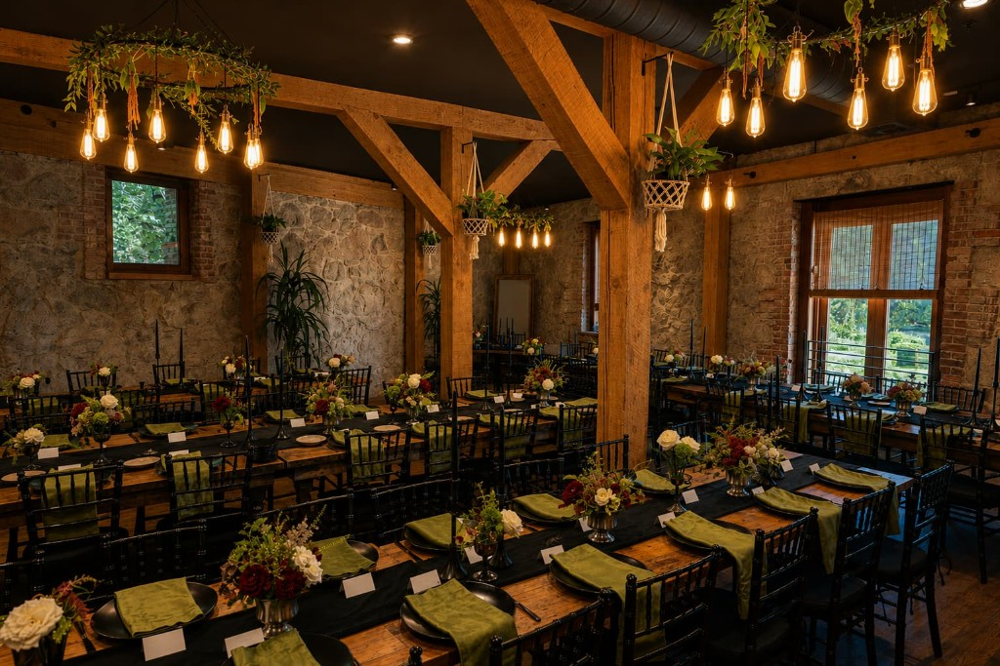

One of the first things couples notice when they walk through Stone House is that it doesn't feel like a single venue. It feels like seven. Each space has its own character — different light, different walls, different energy — and the way you combine them shapes the entire experience of your wedding day. That's what makes planning here so interesting, and occasionally a little overwhelming.
This guide is meant to simplify that process. We'll walk through all seven spaces, what they're built for, and how to match them to your guest count, your vibe, and the kind of evening you want to create. If you've toured Stone House and found yourself thinking I love all of it, but where does everything actually go? — this is for you.
The Great Hall

This is the room most couples picture when they think about their reception. The Great Hall is the largest interior space at Stone House, and it earns its name — original 1857 stone walls on every side, a distinctive wedge shape that narrows from 35 feet at the back to 19 feet at the entrance, and enough presence to hold a room of 100 guests without feeling cavernous.
The wedge is worth understanding. That narrowing isn't a limitation; it creates a natural sense of intimacy. Guests at the far end of the room still feel connected to the head table. There's no dead zone, no forgotten corner. The shape also gives your photographer something to work with — the converging lines draw the eye and create depth in wide shots that a rectangular ballroom simply can't.
Most couples use The Great Hall for dinner and dancing. With a full banquet layout (nine rectangular tables), you're seating 90 to 108. Drop to six tables and you open up space for a proper dance floor. Buffet service works beautifully along the service wall, and for cocktail-style receptions, the room holds 120 to 150 standing.
Best for: Receptions, plated or buffet dinners, dancing, toasts. This is your main event room.
The Showroom

If The Great Hall is where the party happens, The Showroom is where the ceremony lives. This room was originally a performance space, and it still is — just with a different kind of act. A built-in stage with curtain sits at the front, and the angled left wall follows the building's original stone footprint to create a natural amphitheater effect. Every seat has a clear sightline to the altar.
Ceremony seating runs in two sections with a center aisle, and the curved layout means your guests aren't staring at the backs of each other's heads. For 120 to 150 guests, it's surprisingly comfortable. The room also converts beautifully to theater-style seating for live music or presentations — which matters if you're planning a rehearsal dinner with toasts or a corporate retreat with a keynote.
There's something about the room that makes voices carry well without a microphone. Your vows will land. The acoustics are a gift from the stone walls and the room's proportions — built for performance long before amplification existed.
Best for: Wedding ceremonies, live music during receptions, theater-style presentations, any moment that deserves a stage.
The Penthouse

The Penthouse sits on the upper level, and the shift in elevation does something unexpected — it separates the energy. When your guests climb the stairs to The Penthouse, they're entering a different chapter of the evening. Two full bar stations greet them at the entrance, and the clean rectangular footprint makes it one of the most flexible rooms in the building.
For mid-size weddings (55 to 85 guests), The Penthouse works as a self-contained reception space. Dinner, toasts, dancing, bars — everything in one room, no transitions. For larger celebrations, it becomes a second dining room or the cocktail hour space while your team flips The Great Hall for dinner downstairs. Either way, the room has its own identity: slightly more intimate, slightly more elevated (literally), with a warmth that comes from the proportions rather than the decor.
Rehearsal dinners are a natural fit here. An intimate dinner for 55 to 65 in the smaller configuration feels personal without feeling cramped, and having dedicated bars means your guests aren't wandering between floors looking for a drink.
Best for: Rehearsal dinners, mid-size receptions, cocktail hour (while The Great Hall is being set), intimate seated dinners.
The Parlor

Every great venue needs a room that isn't trying to be the main event. The Parlor is that room — the ground-level cocktail and lounge space anchored by an L-shaped bar that runs along the right wall. Round tables, lounge seating, a water station in the corner. It's the room where your guests decompress.
During a typical wedding, The Parlor does double duty. It's the cocktail hour space — welcome drinks, passed appetizers, the first conversations of the evening — while the ceremony room is being cleared and the reception space is being set upstairs. Later in the night, it becomes the after-party lounge. When the formal reception wraps, the energy migrates downstairs. The bar stays open, the seating goes casual, and the evening finds its own rhythm.
What makes The Parlor work is restraint. It's not competing with The Great Hall for grandeur or with The Showroom for drama. It's just a genuinely good bar in a 170-year-old building. That turns out to be exactly what people want at several points during a wedding.
Best for: Cocktail hour, welcome drinks, after-party, any transitional moment in the evening.
The Cavern

The Cavern is the newest addition to the Stone House lineup, and it's still coming into its own. Floor plans are currently in progress, but the space adds real capacity and flexibility to multi-space events. If you're planning a full venue buyout with 200+ guests, The Cavern gives you another room to work with — whether that's an overflow lounge, a dessert station, a photo booth area, or a private retreat for the wedding party between ceremony and reception.
We'll have detailed configurations and capacity numbers soon. For now, know that it exists, it's beautiful, and your coordinator can walk you through how it fits into a larger event plan during your tour.
Best for: Overflow space for large events, private gathering areas, creative uses during full venue buyouts.
The Courtyard

If you've dreamed of an outdoor ceremony in Gold Country, The Courtyard is where it happens. This is Stone House's open-air event space — and in a region where the light between April and October is genuinely extraordinary, it's popular for a reason. Up to 130 guests for a ceremony, with the historic stone building as your backdrop rather than a rented arch.
The Courtyard also works for cocktail hour and al fresco receptions during summer months. Seasonal plantings change through the year, and the transition from outdoor ceremony to indoor reception creates a natural shift in energy that couples love — the sunshine and fresh air for the emotional part, then stone walls and candlelight for the celebration.
Weather-dependent, obviously. But Stone House's indoor spaces are always the backup plan, and the transition is seamless. Your coordinator monitors forecasts and has a pivot-ready timeline for every outdoor event.
Best for: Outdoor ceremonies, summer cocktail hours, al fresco dining, any event that wants Gold Country light.
Putting It All Together: Popular Event Flows
Most Stone House weddings use three or more spaces throughout the evening. The building is designed for movement — your guests flow from one room to the next, and each transition marks a new phase of the celebration. Here are the three most popular configurations:
Classic Flow
Ceremony in The Showroom → Cocktail hour in The Parlor → Dinner and dancing in The Great Hall. This is the most popular layout for a reason — it uses the three strongest rooms in sequence, and every transition feels intentional.
Summer Celebration
Ceremony in The Courtyard → Cocktails in The Parlor → Reception split between The Great Hall and The Penthouse. The outdoor-to-indoor transition gives your guests two distinct acts, and splitting the reception across floors means everyone has room to breathe.
Intimate Dinner
Ceremony in The Showroom → Everything else in The Penthouse. Dinner, toasts, dancing, bars — all in one room. No transitions, no logistics. Just you and your people in a beautiful upstairs space for the rest of the night.
For full venue buyouts (200 to 300 guests), all seven spaces come into play — ceremony, multiple dining zones, cocktail bars on both levels, outdoor overflow, late-night lounge. Your coordinator handles the choreography. You just tell them the guest count and the vision.
How to Decide
Start with three questions: How many guests? What time of year? What kind of energy do you want?
Guest count narrows your options fast. Under 70 guests, The Penthouse can hold your entire reception. Between 70 and 150, you're in Classic Flow territory — Showroom, Parlor, Great Hall. Above 150, you'll want The Courtyard for the ceremony and both levels of the building for the reception.
Season matters for The Courtyard. May through October is outdoor ceremony weather. November through April, you're likely indoors — which is beautiful in its own way, because the stone walls and candlelight hit differently in winter.
And energy is personal. Some couples want their guests to move, to discover new rooms, to feel the evening unfold across multiple spaces. Others want everything in one room — contained, intimate, no logistics. Both approaches work at Stone House. The building supports both.
The best way to figure it out is to walk the spaces in person. Photos and floor plans help, but there's no substitute for standing in The Great Hall and feeling the scale, or climbing to The Penthouse and understanding why the elevation change matters. View all floor plans and capacity details, then come see it for yourself.
Ready to figure out which spaces fit your vision? Explore floor plans and capacity or get in touch to start the conversation.